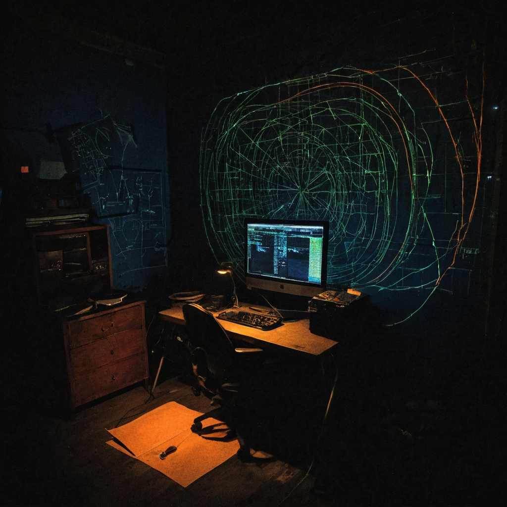

There is a moment in chess improvement where you stop asking "what is the best move?" and start asking "what does my opponent hate most?" Bram Cohen built a tool that applies that exact question to one of the strongest chess engines in the world, and the result is more interesting than it sounds.
Originally shared by @bramcohen on X, this is a link to a small open-source project called coach-leesa. The tool is designed to help players learn to beat Leela Chess Zero at Queen Odds. Instead of just letting you play against a handicapped engine and iterate blindly, it shows you the moves Leela is most afraid of you playing. The GitHub repo is at github.com/bramcohen/coach-leesa.

Playing against a strong chess engine, even with a material handicap as large as a queen, is still genuinely hard. Queen Odds sounds dramatic. It means the engine starts without its most powerful piece, roughly nine pawns worth of material. But Leela Chess Zero is not a weakened opponent at that setting. She compensates through near-perfect calculation and a strategic ceiling most human players simply cannot reach.
The standard approach to training at this level is trial and error. You play, you lose, you try different lines, you read some prep. It works eventually, but it is slow and the feedback loop is indirect.
Coach-leesa does something different. It uses Leela's own internal evaluations to figure out which moves most threaten her position from that handicapped state. That coaching comes from the engine itself, not from a human annotator guessing what matters at this level.
The distinction is meaningful. At Queen Odds, there are moves that are objectively strong in a general chess sense and there are moves that create specific problems Leela struggles to solve at that material deficit. Those two categories overlap, but they are not identical. Generic chess wisdom does not always tell you which moves belong in the second category. The engine's own evaluations might.
What it does: Coach-leesa sends positions to Leela and uses the engine's policy and evaluation outputs to identify moves she considers most dangerous for herself. That data becomes the training material.
Who it helps: Intermediate to strong club players who want to actually beat a strong engine at Queen Odds, not just lose slightly less. This is not a beginner tool. You need enough tactical ability to follow through on the plans the coach is pointing at.
Why builders should care: The underlying approach is broadly interesting. Using an opponent's own evaluation function to generate targeted training data is something that could apply well beyond chess. Adversarial training setups, security red-teaming, game AI development. Any domain where you can access an opponent's internal signal has this option available.
What still needs work: This is a personal project published to GitHub, not a polished product. There is no tutorial or community around it yet. If you want to use it you will need to be comfortable setting it up yourself.
What I would test first: Run a set of Queen Odds games using the tool's prep, then the same number without it. See if the win rate shifts and which types of positions the coached lines tend to reach.
I bookmarked this one partly because it is Bram Cohen. He built BitTorrent, he built Chia, and when he puts something on GitHub it usually has a genuinely interesting idea underneath it.
The thing that held my attention is the inversion. Most chess training asks what the strongest move is from a neutral standpoint. Coach-leesa asks what the engine most wants to avoid. Those are not the same question, especially at a specific material imbalance like Queen Odds. Leela has particular patterns she executes well and particular pressure she struggles with when she is down a queen. A tool that surfaces the second category is more useful than generic improvement advice for this specific problem.
I think this kind of targeted, opponent-aware training is genuinely underused in open-source tools. Worth watching what the chess improvement community does with it.
If the approach gets extended to other handicap levels, the training use case widens. More broadly, using an engine's own policy outputs to generate training positions is an area where commercial tools have hints of this idea but open-source options are thin. Interested to see if this concept gets picked up by people working on AI training more generally, not just chess players.
Source: X post by @bramcohen Post URL: https://x.com/i/web/status/2078545345752301925 Retrieved: 2026-07-18
External references: